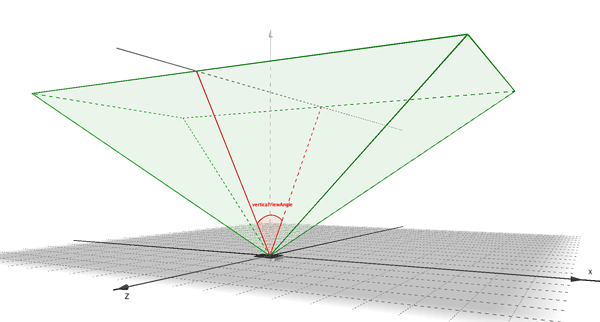

LeapDevice Class Reference
| Inherits from | NSObject |
| Declared in | LeapObjectiveC.h |
Overview
The LeapDevice class represents a physically connected device.
The LeapDevice class contains information related to a particular connected
device such as field of view, device id, and calibrated positions.
Note that Device objects can be invalid, which means that they do not contain
valid device information and do not correspond to a physical device.
Test for validity with the [LeapDevice isValid] function.
Tasks
-
– horizontalViewAngleThe angle of view along the x axis of this device, in radians.
-
– verticalViewAngleThe angle of view along the z axis of this device, in radians.
-
– rangeThe maximum reliable tracking range, in millimeters.
-
– distanceToBoundary:The distance to the nearest edge of the Leap Motion controller’s view volume.
-
– isValidReports whether this is a valid LeapDevice object.
-
– equals:Compare LeapDevice object inequality.
Two LeapDevice objects are equal if and only if both LeapDevice objects represent the
exact same LeapDevice and both Devices are valid. -
+ invalidReturns an invalid LeapDevice object.
Class Methods
invalid
Returns an invalid LeapDevice object.
+ (LeapDevice *)invalidReturn Value
The invalid LeapDevice instance.
Availability
Since 1.0
Discussion
Returns an invalid LeapDevice object.
You can use the instance returned by this function in comparisons testing
whether a given LeapDevice instance is valid or invalid. (You can also use the
[LeapDevice isValid] function.)
Declared In
LeapObjectiveC.hInstance Methods
distanceToBoundary:
The distance to the nearest edge of the Leap Motion controller’s view volume.
- (float)distanceToBoundary:(const LeapVector *)positionParameters
- position
The point to use for the distance calculation.
Return Value
The distance in millimeters from the input position to the nearest boundary.
Availability
Since 1.0
Discussion
The distance to the nearest edge of the Leap Motion controller’s view volume.
The view volume is an axis-aligned, inverted pyramid centered on the device origin
and extending upward to the range limit. The walls of the pyramid are described
by the horizontalViewAngle and verticalViewAngle properties and the roof by the range.
This function estimates the distance between the specified input position and the
nearest wall or roof of the view volume.
Declared In
LeapObjectiveC.hequals:
Compare LeapDevice object inequality.
Two LeapDevice objects are equal if and only if both LeapDevice objects represent the
exact same LeapDevice and both Devices are valid.
- (BOOL)equals:(const LeapDevice *)otherAvailability
Since 1.0
Discussion
Compare LeapDevice object inequality.
Two LeapDevice objects are equal if and only if both LeapDevice objects represent the
exact same LeapDevice and both Devices are valid.
Declared In
LeapObjectiveC.hhorizontalViewAngle
The angle of view along the x axis of this device, in radians.
- (float)horizontalViewAngleAvailability
Since 1.0
Discussion
The angle of view along the x axis of this device, in radians.

The Leap Motion controller scans a volume in the shape of an inverted pyramid
centered at the device’s center and extending upwards. The horizontalViewAngle
reports the view angle along the long dimension of the device.
Declared In
LeapObjectiveC.hisValid
Reports whether this is a valid LeapDevice object.
- (BOOL)isValidReturn Value
True, if this LeapDevice object contains valid data.
Availability
Since 1.0
Discussion
Reports whether this is a valid LeapDevice object.
Declared In
LeapObjectiveC.hrange
The maximum reliable tracking range, in millimeters.
- (float)rangeAvailability
Since 1.0
Discussion
The maximum reliable tracking range, in millimeters.
The range reports the maximum recommended distance from the device center
for which tracking is expected to be reliable. This distance is not a hard limit.
Tracking may be still be functional above this distance or begin to degrade slightly
before this distance depending on calibration and extreme environmental conditions.
Declared In
LeapObjectiveC.hverticalViewAngle
The angle of view along the z axis of this device, in radians.
- (float)verticalViewAngleAvailability
Since 1.0
Discussion
The angle of view along the z axis of this device, in radians.

The Leap Motion controller scans a region in the shape of an inverted pyramid
centered at the device’s center and extending upwards. The verticalViewAngle
reports the view angle along the short dimension of the device.
Declared In
LeapObjectiveC.h